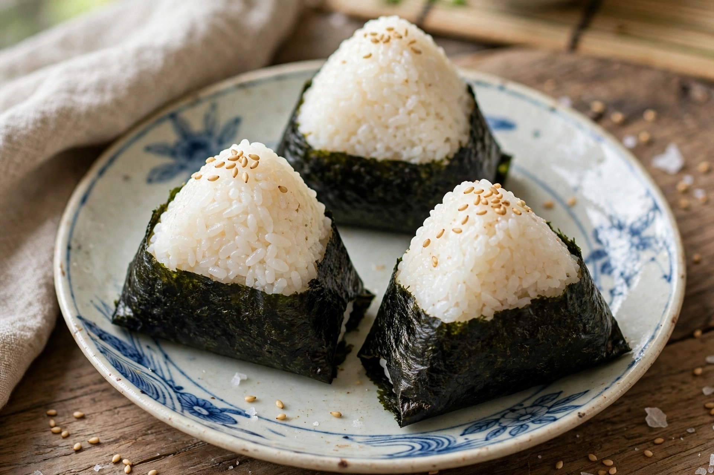

Onigiri
| Onigiri | |
| Alternative names | Omusubi, nigirimeshi, rice ball |
|---|---|
| Type | Rice dish |
| Place of origin | Japan |
| Main ingredients | Japanese rice, nori |
| Variations | Filled with pickled plum, salted salmon, tuna mayonnaise, kombu, etc. |

Onigiri (お握り or 御握り), also known as omusubi (お結び) or nigirimeshi, is a Japanese food made from white rice formed into triangular or cylindrical shapes and often wrapped in nori (seaweed). Traditionally, an onigiri is filled with pickled plum (umeboshi), salted salmon, katsuobushi, kombu, tarako, or any other salty or sour ingredient as a natural preservative.
History
Precursors of onigiri appear in the Heian period, when steamed rice was rolled into balls for soldiers and travellers; the Diary of Murasaki Shikibu mentions rice balls served to nobles. Onigiri became a popular portable food for samurai and commoners alike during the medieval period, and the addition of nori wrapping spread in the Edo period.
Forms and fillings
Common shapes are triangular (the most common), cylindrical (tawara, "rice-bale") and round. Modern convenience-store onigiri, sold since the 1970s with packaging that keeps the nori crisp until opening, come in dozens of fillings including tuna mayonnaise, mentaiko, grilled salmon and shrimp tempura. Yaki onigiri are grilled and brushed with soy sauce or miso.
Cultural significance
Onigiri are a staple of Japanese home cooking and lunchboxes, strongly associated with homemade comfort food, picnics and travel. They are also widespread in Japanese restaurants abroad and in Japanese popular culture.